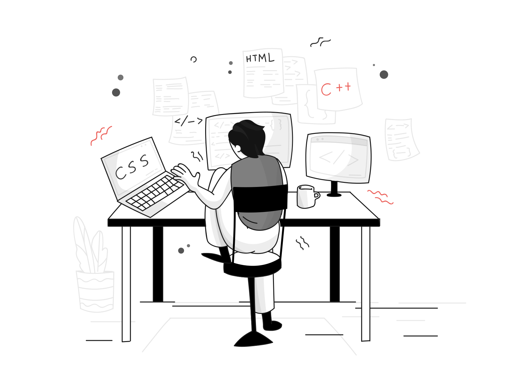

Post
What to read to become a better developer
Resources that explain how to program simply and well

Web development is a fast-changing field. New technologies and advancements appear every day, and web developers need ways to stay apprised of these changes. For inspiration, see The Beauty of Programming By Linus Torvalds (the creator of Linux).
Web Development Blogs and News Sites
Keeping up with web development trends while writing code can be a difficult task. Regularly reading blogs and news sites devoted to your areas of interest allows you to keep apprised of which technologies are on the rise and learn how to get up and running with a new one. Many offer an email subscription, which makes it easy to get the latest news directly from your inbox.
-
Practical Typography. Web typography in ten minutes or less. By Matthew Butterick.
-
Codrops publishes articles and tutorials about the latest web trends, techniques, and new possibilities in web design and development.
-
CSS Tricks has guides covering almost every aspect of web development, but it leans more heavily on front-end development.
-
The David Walsh Blog features guides and tutorials on almost every facet of web development and software engineering.
-
Hacker News, a social news website focusing on computer science and entrepreneurship. Run by the investment fund and startup incubator Y Combinator. The word hacker in "Hacker News" is used in its original meaning and refers to the hacker culture which consists of people who enjoy tinkering with technology.
-
Hongkiat includes a number of useful resources for designers and developers, such as tech how-tos, tutorials, design inspiration, and free design elements.
-
HTML for people. A delightful introduction to creating simple web documents. Definitely worth checking out for a nice introduction to web development.
-
A List Apart covers web development, design, and the business side of web development.
-
Smashing Magazine features news and opinions on website design, web development, and user experience.
Personal Blogs
Following respected developers allows you to learn from people with experience in web development. Over time, as you learn more about various topics, you can decide whether you agree or disagree with them.
-
Bartosz Ciechanowski— A developer creating beautiful interactive articles on science (e.g. how sound waves work) and technology (e.g. GPS).
-
Josh Comeau—Software engineer now focused full-time on developer education. Gold standard for a whimsical, highly polished modern portfolio.
-
Flother.is, by Matt Riggott. Software engineer at @GRID-is. Fellow of the Royal Geographical Society. Postgraduate student at Lund University.